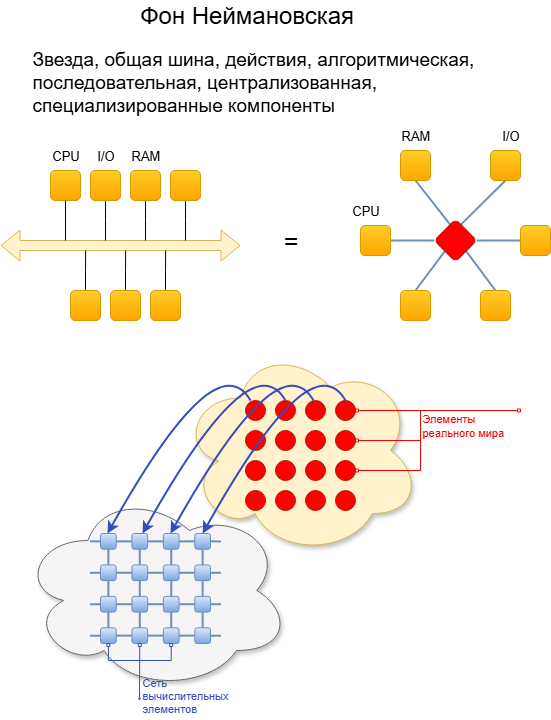
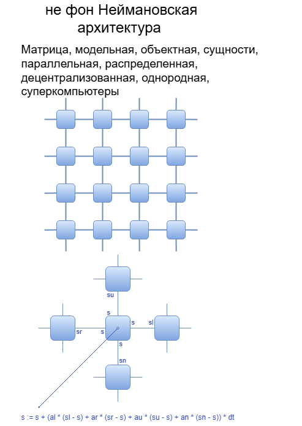
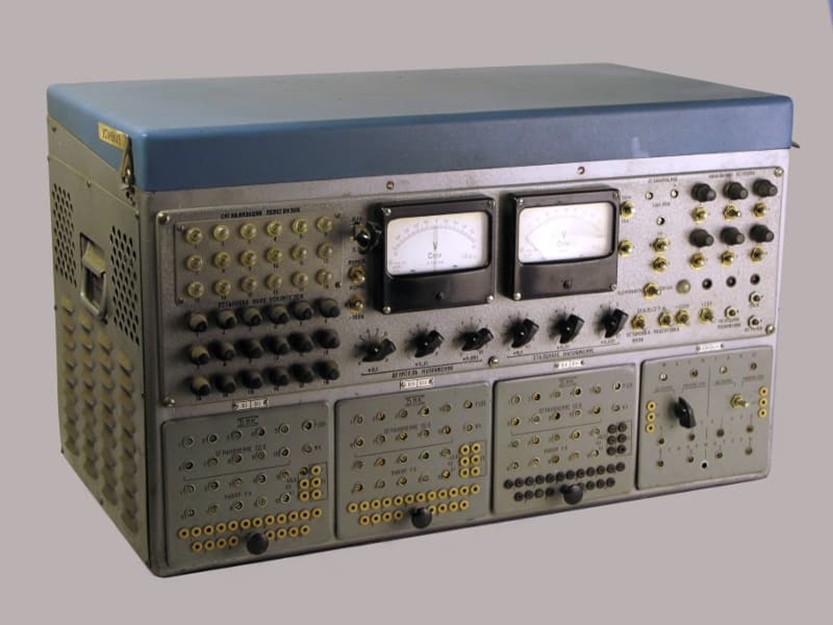

Лекция 31. ИИ - усилитель деятельности мозга. Компьютеры и вычислительные платформы. Борьба со сложностью окружающего мира
Во время своего развития система сталкивается с большой трудностью - количество связей стремительно растёт, опережая количество элементов. Компьютер - сложнейшая система и
поэтому его нельзя проектировать так, чтобы элементы контактировали «каждый с каждым». Джон фон Нейман спроектировал две компьютерные архитектуры, носящие теперь его имя.
Архитектура с общей шиной или так называемая «звезда» имеет центральный узел, к которому подключается каждое устройство компьютера - процессор, память, монитор, принтер и
так далее. Преимущество этой самой распространённой архитектуры, называемой «фон-неймановской», заключается в том, что каждое устройство при подключении задействует
только одну связь с «шиной» унифицированным для всех способом. Сколько устройств, столько и связей. Общение двух устройств происходит захватом шины.

В это время остальные устройства общаться между собой не могут - это ограничение такой архитектуры. После освобождения шины общаться может между собой другая пара устройств.
Сама собой обработка информации на таком компьютере становится последовательностью действий, алгоритмом. Такой принцип замедляет работу компьютера. Но присоединение новых
устройств максимально упрощено. Заботой проектировщика, разработавшего новое устройство, является написание всего одной программы, поддерживающей протокол связи этого
устройства с шиной. Все устройства говорят на одном языке общения. Но эта организация порождает разговор на языке действий, процессов, глаголов.
Как говорил М.В. Ломоносов «… на испанским языке удобнее говорить с Богом, на французском с друзьями, по-немецки с неприятелем, а на итальянском с женским полом говорить
прилично». Описать понятие «лампочка» на языке глаголов можно, но трудно. Поэтому алгоритм - это язык решения задач, а не описания сущностей. В то время как мир состоит
именно из сущностей и описывается моделями, уравнениями.
Альтернативную параллельную архитектуру также предложил фон Нейман, которая была названа в честь его «не фон-Неймановской». Элемент компьютера выполняется как можно более
простым и универсальным. Каждый элемент соединяется с несколькими соседними, рядом находящимися такими же элементами. То есть наращивать такую структуру,
напоминающую матрицу, можно бесконечно. Имитировать мир на таком компьютере можно, представив его множеством отдельных элементов, разбив целое на кусочки и поручив каждому
вычислительному элементу моделировать отдельный такой кусочек. Время существования имитируемой на компьютере системы делится на такты. Каждый элемент моделирует свою часть
мира один такт времени. В конце такта деятельности вычислительной машины элементы обмениваются своими результатами с соседними, чтобы учесть их на следующем такте расчета.

Параллельная архитектура компьютера имитирует параллельный мир. Общение отдалённых между собой элементов машины происходит как и в реальном мире через посредников.
По такой однородной децентрализованной распределённой схеме собирают сегодня суперкомпьютеры, многопроцессорные системы. Логично назвать такую машину машиной сущностей, так как
каждый её элемент имитирует отдельную сущность в мире, развертывая её свойства во времени. Связи обеспечивают равновесие между элементами. Параллельная архитектура
компьютера более естественна для описания окружающего нас параллельного мира. Переход от первого типа архитектуры ко второму связан с миниатюризацией аппаратных решений.
Сегодня наблюдается сближение этих двух вычислительных архитектур. В функциональное программирование для фон-неймановских машин со временем входят новации
объектно-ориентированного языка для не-фон-неймановских, но вынужденного функционировать в силу исторических причин на машине процессов.
Сама фон-неймановская архитектура в своём развитии подходит к пределу роста. БОльшее количество транзисторов требует бОльших размеров объединяющих их чипа, что приводит
к задержкам в передаче сигналов, а, значит, к уменьшению тактовой частоты работы процессора. Увеличение количества транзисторов на единицу площади чипа требует более
эффективного отвода выделяемого ими тепла. Надежность срабатывания логического элемента требует ненулевого количества протекающих через него электронов. Ответом на эти
вызовы явилось дублирование в вычислительных системах минимально возможного чипа. Так появились двух-, четырёх- ядерные компьютеры. Архитектура первого типа эволюционно
превращается во вторую, сочетая преимущества обеих.
Разумеется, рассматриваются также новые перспективные технологии, где электрический ток заменяется на световой поток, электроника на фотонику, увеличивая скорость передачи
сигналов и параллельность их обработки. Перспективными являются фотонные матрицы, используемые к примеру, в цифровых фотоаппаратах, которые обрабатывают огромное
количество параллельных лучей одновременно, каждый из которых несёт свою информацию. Этот подход напоминает великое изобретение природы - глаз и чьи образы, транслируемые
им, мы воспринимаем одномоментно сразу во всех его рецепторах сетчатки. Нейронные сети представляют собой однородные сетевые структуры – и это ещё одно важнейшее
направление развития компьютеров. Последнее время начинают развиваться квантовые компьютеры. Для фотонных, нейронных и квантовых компьютеров пока не придуман удобный
универсальный язык переложения описания мира на язык структур этих машин.
Существует ещё один тип компьютеров - аналоговые. Давно замечено, что многие физические явления, например, колебания маятника, возвратно-поступательные движения поршня,
колебания электрического тока в контуре, вращение вала станка, движения яхты описываются одними и теми же уравнениями. Таким образом, если расчет поведения системы
производить не программой, а собрав аналог оригинала и заставив его работать, то можно получить нужную информацию о поведении и свойствах исходного объекта на более
доступном прототипе. Если такие прототипы научиться легко складывать из типовых элементов, связывая их между собой в некотором пространстве, то можно рассчитывать на
точный и быстрый результат исследования, так как процессы уравновешивания (решения уравнений) в природе происходят практически мгновенно. Недостатком аналоговых машин
являются труднодоступные прототипы нелинейных элементов, большие физические размеры элементов, медленный процесс сборки модели.

МН-7 аналоговая параллельная вычислительная машина
В научно-фантастической литературе описывается вершина развития такой техники - разумная среда Солярис в виде однородного океана без явно выраженных отдельных органов.
Близкими к нему идеями являются подвижные роевые конструкции из одного типового элемента в рассказе Станислава Лема «Непобедимый», способные, перестраиваясь, собрать систему
любой структуры практически мгновенно. С такой структурой невозможно бороться, так как она под внешним воздействием снова рассыпается на множество мелких элементов и
мгновенно собирается в новом месте. А преследование каждого по отдельности элемента нерентабельно.
Очень много для функционирования такой аппаратной структуры значит язык описания систем, его развитость, гибкость, удобство.
Во-первых, язык должен поддерживать иерархическое образование систем. Современные языки пока не очень приспособлены к такому развитию. Во-вторых, переход к следующему уровню
иерархии должен сопровождаться сжатием информации по схеме: «данные - модели - алгебры - …», «… - свойства - элементы - связи - поведение - свойства - … », понятия
должны абстрагироваться, а текст на языке должен быть всё более компактен с повышением уровня описания. Известно, что 90% кода составляет интерфейс программы. Поэтому
он не должен создаваться каждый раз заново, а собираться на ходу из типовых элементов, что сейчас, кстати, наблюдается.
Системы искусственного интеллекта должны генерировать свой интерфейс на ходу, а программа должна написаться сама из ядра. Программа должна оперировать объектами так, как
это происходит в реальном мире вещей, а, значит, говорить и думать на языке моделей. Математические конструкции должны использовать в своём составе только элементы,
у которых сформулированы им обратные и противоположные. Иначе ни о какой свободе вычисления ответов на любые вопросы не может быть и речи. Важно, чтобы были разработаны
версии языка, которые могут переходить от свойств - к объектам, от объектов – к связям, от связей – к свойствам и так далее. Такая программа должна быть интерпретатором,
то есть должна перестраивать сама себя на ходу, а при необходимости ускорения работы компилировать отдельные элементы кода. Основой искусственного интеллекта должен быть не
алгоритм, а сущность, как в природе, закон, уравнение, объект, свойство. Алгоритм - производное от сущности, частный вариант её развития при конкретных условиях. В законе
же потенциально содержатся сразу все варианты поведения объекта. Система должна сама образовывать при необходимости новые понятия и уметь оптимально разбивать сложное на
простое, а систему на подсистемы.
Пока в традиционных языках программирования наблюдается не более 7-8 уровней иерархии: электрические схемы компьютера и их физические сигналы, логический сигнал или машинный
код, автокод, алгоритмический язык, язык функционального программирования, объектно-ориентированный язык, математический язык с существенными ограничениями.
В последнее время начинает также наблюдаться появление общения с компьютером на естественном языке и языке образов. В природе таких уровней возрастания сложности систем
пока гораздо больше.
Математика, как формальный язык, тоже меняется по мере своего развития. Классическая математика Евклида, Ньютона, Коши, Фурье, Эйлера считает, что мир непрерывен, однороден
и существует в готовых заданных рамках. Кибернетика как наука об обратных связях в машине и живом рассматривает отрицательную обратную связь, явление регулирования, как
основополагающие в природе, а саму природу как систему, стремящуюся к равновесию. Науку регулирования и управления развивали Уатт, Ляпунов, Винер, Беллман, Канторович,
Понтрягин. Появившаяся в конце 20-го века фрактальная (дискретная, бесконечная, нелинейная) математика представляет окружающий мир как взаимодействие множества простейших
автоматов, видя мир самоподобным, рекурсивным, непрерывно развивающимся от простого к сложному, признаёт многомерность мира и чрезвычайную его изменчивость в различных
местах пространства, а также влияние всего на всё (Эйнштейн, Лобачевский, Риман, Мандельброт, Вольфрам). Последнее развитие в описании мира начало формироваться в рамках
синергетики, науки о самоорганизации, теории искусственного интеллекта, метаматематики, нейросетей – Гёдель, Розенблатт, Пригожин. Положительная обратная связь, усиливая
возникающие отклонения от нормы и выводящая систему из равновесия, разрушает её привычную структуру, заставляя искать новое равновесное состояние, а, значит, усложняться,
развиваться, структурно приспосабливаться.
Перечисленные здесь языки, аппаратные носители информации, математика, системотехника составляют единство средств для достижения результата - построения усилителя умственной деятельности.
Одновременно для сравнения интересно узнать, какими средствами обходится наш мозг, достигая своего уровня развития.
Мозг высокоразвитого существа тратит на мышление бОльшую часть энергии. «Мозг, имея массу не более 1,5—2% от массы тела, потребляет 25% всей энергии».
«Мозговая деятельность среднестатистических мужчины и женщины ежедневно использует около 450 и 350 ккал в день соответственно, при этом пик работы головного
мозга приходится на 5-6-летний возраст, когда этот орган способен использовать до 60% от всей полученной телом энергии». Огромное время жизни тратится на
перестройку модели мира в мозге человека. Сон, когда идет активная перестройка модели, занимает 35-40% времени существования биологического объекта.
Мозг содержит 1011 нейронов, 1015 связей нейронов, а сам организм, которым он управляет, состоит из 37,2 триллионов клеток,
4750*1027 атомов, что является показателем его сложности. Организм работает с очень большой скоростью - в одной клетке в 1 секунду происходит
до 1 000 000 000 операций. 100 триллионов операций в секунду – скорость работы мозга. Скорость роста биологических тканей – 1 нм в сек.
Для построения модели мира мозг использует гигантское информационное пространство: 9 000 вкусовых рецепторов, около 6–7 миллионов колбочек и 110–125
миллионов палочек в сетчатке глаз, от 12 000 до 20 000 слуховых рецепторов и 100-200 тактильных рецепторов на 1 см2 кожи.
Мозг человека поддерживает 1017 бит памяти. Мощнейшая машина!
Реально построение модели в мозге человека идёт по ниспадающей экспоненте с уменьшением количества совершаемых ею ошибок N: N ~ N0*e-t,
где t - 109 тактов обучения времени.
Человек, как энергетическая система в среднем потребляет около 2000 ккалорий в день, что дает около 2 кВт*ч или около 100 Ватт средней
мощности. Можно представить, что человек ест, как одна большая лампочка накаливания на 100 Ватт. И использует «для себя» (в домашних условиях в среднем)
больше 100 кВт*ч в месяц.
Из этого от 200 до 1000 Ккал (в стрессовых ситуациях) съедает мозг, то есть потребляя от 20% до 40% получаемой организмом энергии, что дает по оценкам
среднюю мощность 30 Вт. Для сравнения ноутбук потребляет около 30 Вт мощности, телефоны - 0.5-1 Вт, видеокарта - 250 Вт.
Человек может не есть 3-7 дней. Съев двойную суточную норму, человек при наличии воды будет активен 2 дня, что даёт грубую оценку человека как ёмкости
аккумулятора 10 кВт*ч. В расчёте на 1 кг веса человека мы имеем 0.2 кВт*ч/кг и находимся между бензином (10 кВт*ч/кг)
и Li-ion (0.1 кВт*ч/кг) аккумулятором, причем ближе к аккумуляторам
Солнечная панель дает около 300 Ватт на пике работы. При этом следует учесть, что так как Солнце в умеренных широтах светит достаточно слабо и только днем, то
реальное значение меньше в 2-5 раз. Тогда, если бы человек питался только энергией Солнца, то в среднем ему было бы достаточно мощности двух-трёх панелей.
Нам достаточно носить «солнечную одежду» для того, чтобы получать всю необходимую энергию. При сегодняшнем развитии технологий такая панель весила бы 2.5 кг и
имела бы размеры 35 см*40 см.
Человек как обогреватель и как транспорт.
В покое человеческое тело вырабатывает 80 ватт тепла, теряя при этом за счёт дыхания 10 ватт, в виде теплового излучения — 30 ватт, за счет теплопроводности и
конвекции — 20 ватт, испарения влаги — 20 ватт. То есть человек крайне слабый обогреватель. Обычные домашние обогреватели потребляют по 1 кВт.
Своё небольшое собственное тепло мы сохраняем благодаря термостатическим свойствам нитяной с прослойками воздуха одежды.
Затраты среднего человека на перемещение (транспорт, топливо) составляют 8 000 кВтч за год. Потребление электричества — 2 500 кВтч за год.
На подогрев воды и обогрев жилых помещений уходит 30 000 кВтч за год. Получается на средний ежедневный подогрев воды и обогрев используется до 100 кВтч в
день, что в 50 раз больше, чем человек в принципе потребляет, как биологический объект.
Человек как активное живое существо может перемещаться в пространстве. Допустим человек может переместиться на 30 км за день пешком и на 120 км за день
на велосипеде. Автомобиль с ДВС тратит в среднем 5 л на 100 км, 1 литр = 10 кВтч, что дает 500 Втч на км. Электромобиль — 150–200
Втч на км. Пешеход, если 2 кВтч разделить на 10–50 км, тратит 50–200 Втч на км, как небольшой электромобиль, потребляющий 50–100 Втч на км.
Для сравнения электровелосипед при средней скорости 10–15 км/ч тратит 10 Втч/км. Велосипедист, если разделить 2 кВтч на 100–1000 км,
покажет значение этой величины 2–20 Вт*ч/км.
На чём можно построить или смоделировать такую машину?
Задания
Замерьте потребление собственной энергии в течение месяца. Зная параметры своего тела, пересчитайте более точно своё относительное энергопотребление и сравните
себя с бытовой техникой. Приведите расчёт в тетради.